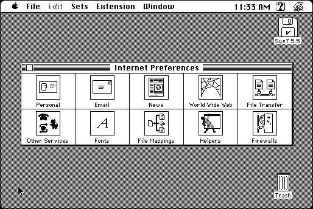

Download
internetconfig-202.zip (180K) Internet Config 2.0.2 repackaged into a zipped hfs disk image and checksum file. The disk image can be mounted with Mini vMac.
internetconfig-202.sit (180K) Internet Config 2.0.2 in the original format.
copyright: Peter N. Lewis, Quinn "The Eskimo!"
mod date: Aug 4, 1998
license: Public Domain
from url :
Stairways Files
Central preferences database for Internet applications. “Requires System 7 or later”. Official website (but not download site) is “http://www.anarchistturtle.com/Quinn/Config/”.

Download Programmer”s Kit
ICProgKit2.0.2.dsk.zip (553K) Internet Config 2.0.2 Programmer”s Kit repackaged into a zipped hfs disk image and checksum file. The disk image can be mounted with Mini vMac.
ICProgKit2.0.2.zip (623K) Internet Config 2.0.2 Programmer”s Kit in the original format.
Download Application Source
ICAppSourceKit2.0.2.dsk.zip (262K) Internet Config 2.0.2 Application Source repackaged into a zipped hfs disk image and checksum file. The disk image can be mounted with Mini vMac.
ICAppSourceKit2.0.2.zip (283K) Internet Config 2.0.2 Application Source in the original format.
If you find these downloads useful, please consider helping the Gryphel Project, which hosts them.
Here are the md5 checksums for the downloads, signed with Gryphel Key 5:
--------- GRY SIGNED TEXT --------- 550d5885777f85ce7b8035e08553ee5b internetconfig-202.zip 9e6895b6e02a1590fb34bb739c3b79b9 internetconfig-202.sit 16e9a094a9e7f8298eee2344217ec553 ICProgKit2.0.2.dsk.zip 4d4621bf2ebc8299940d331336ec5db6 ICProgKit2.0.2.zip a68bf69d6bc3407bf6f1f650eed65569 ICAppSourceKit2.0.2.dsk.zip 6a914cd33fcef92096b25641897ff9bf ICAppSourceKit2.0.2.zip ------- BEGIN GRY SIGNATURE ------- Gry/4Xa8CFcUzxdN/LmstNzZZi+E2QNei/vcudrZ3IvSGFR8QRZhjbWye7za6Zfl Yy7G30ulbaxW00as3JbWV+QgQALBtVJzUMNIw84iCus1YlrW4NEve1rnTkFKopD6 EfRfIuTFJKYqsGsdC2KYK3G5V9QPpEfby9F5JFs9ujGDC9b5pHx95HmfPiIAOfu+ -------- END GRY SIGNATURE --------